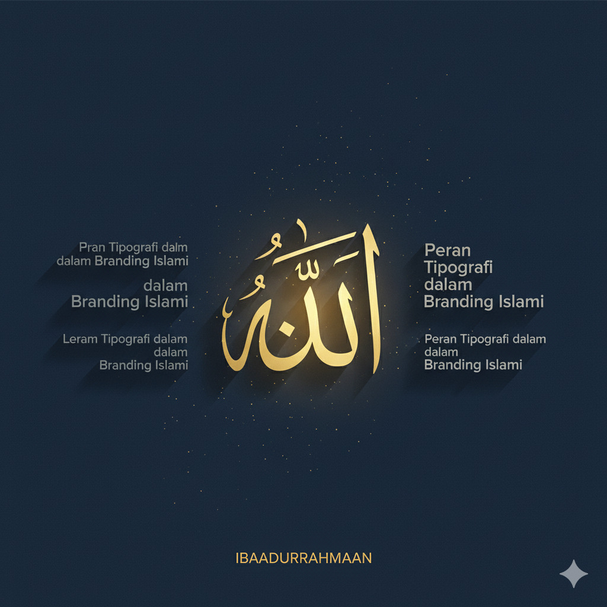

Inspirasi & Wawasan Desain
Kumpulan artikel, tips desain, dan wawasan Islami seputar kreativitas visual.
Wawasan Islami | 2 Okt 2025
Memahami Filosofi Warna yang Halal dan Thayyib
Eksplorasi makna warna yang selaras dengan ajaran Islam dan dampaknya pada desain.
Baca Selengkapnya
Tips & Trik | 15 Sep 2025
5 Prinsip Desain Minimalis yang Efektif
Cara menerapkan prinsip kesederhanaan untuk menghasilkan desain yang powerful dan elegan.
Baca Selengkapnya

Tren Kreatif | 1 Sep 2025
Peran Tipografi dalam Branding Islami
Memilih jenis huruf yang tepat untuk menyampaikan pesan yang serius dan terpercaya.
Baca Selengkapnya